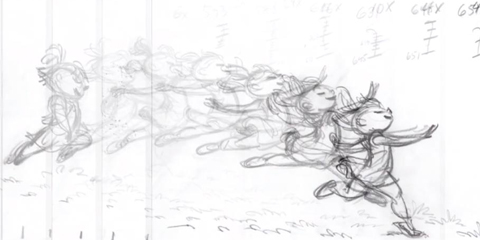
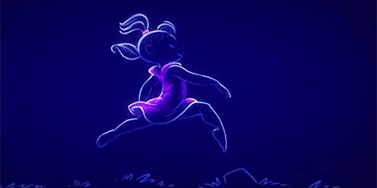

Part of the Animat Habitat studio workshop: Character Design for Animation.
Authored by Dane Aleksander.
Continued from The Character.
The Context
We look at character art that catches the eye, at why a character design works, at why another does not, and in particular at the silhouette of a character in its context. We construct a mental and visceral image of a character design that works ― for you, over time. We look for a balance of originality and emulation in the art of character design.
a/ Duet. (2014) Glen Keane.
Working in conjunction with Google’s Advanced Technology and Projects (ATAP), Glen Keane debuted his hand-drawn short, Duet (2014), at the Google I/O developer conference. The animated short is part of a collection of Spotlight Stories that are designed to explore the possibilities of interactive animation on mobile devices. Here, the animation is referenced as a reminder to picture what a finished frame may look like, and yet to keep character design rough during its visual development. Rougher sketches tend to look better, and mostly it has to do with the energy ― you can feel the creativity of the person behind the drawing.


© Glen Keane, Duet (2014) | Mia